Trên lộ trình mà các bạn đang di chuyển, nếu có con sông hay suối lớn cắt ngang, phải lội qua. Trước hết, các bạn hãy thẩm định tình hình và quyết định xem có cần phải vượt qua hay không? Nếu cần thì phải chọn phương pháp vượt sông nào an toàn nhất?
Có ba trường hợp khi vượt sông – suối:
- Sông suối cạn, có thể lội bộ vượt qua được.
- Sông suối sâu, phải bơi hay sử dụng phao, bè để vượt.
- Làm cầu để vượt qua.
LỘI BỘ QUA SÔNG
Chuẩn bị:
- Chọn lựa vị trí hợp lý để vượt sông: Những nơi sông suối quanh co thì nước chảy chậm hơn ở những đoạn thẳng, nhưng coi chừng có những xoáy ngầm.
- Thăm dò độ chảy xiết của dòng sông, những chỗ cạn thường rộng và dễ vượt hơn những chỗ hẹp và sâu.
- Khi hai dòng sông suối gặp nhau, chúng ta nên vượt ở phần trên của giao điểm, tuy phải vượt hai lần, nhưng ở đó thường thì nước cạn và chảy yếu hơn.
- Khảo sát đáy sông, suối, nếu có bùn nhiều thì không nên mang giầy, vì các bạn có thể bị dính giầy dưới bùn. Nếu là đá sỏi thì nên mang giầy để hạn chế trơn trợt, gây thương tích, trầy xước…
- Lưu ý đến tốc độ khác nhau của dòng chảy khi gặp các chướng ngại vật, những chỗ có nước xoáy vòng tròn.
- Tìm kiếm những điểm có thể bám víu khi cần.
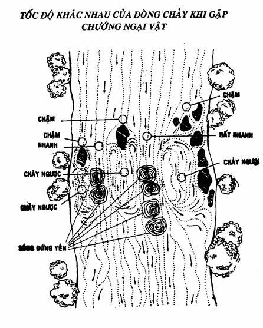
- Nếu gặp dòng sông chảy siết và sâu thì các bạn nên đi ngược lên vùng thượng nguồn, tốt nhất là nơi phân nhánh của dòng sông.
- Coi chừng những thân cây, súc gỗ, hoặc những vật lạ trôi theo dòng nước.
- Không nên vượt sông ở những đoạn có vách đá, nhiều cây trôi, nước chảy siết, trơn trợt…
- Những chỗ nước xoáy nhẹ và cạn thì có thể làm điểm tạm dừng để nghỉ, nhưng nếu xoáy mạnh và sâu thì trở nên nguy hiểm, có thể lật chìm thuyền bè và nhấn chìm các bạn.
- Lưu ý đến những cơn mưa thình lình ở trong vùng hay những cơn giông bão ở những ngọn núi cao gần đó, nó có thể tạo nên những cơn lũ quét bất ngờ, rất nguy hiểm.
Vượt sông suối một mình:
- Chọn một khúc sông rộng, cạn, ít bùn, không lún, nước trong, trống trải.
- Nếu nước sông đục, mang theo phù sa, rác rến, lục bình trôi nổi…. Các bạn dùng một gậy dài để thăm dò phía trước mặt. Di chuyển chầm chậm, đưa gậy nhè nhẹ để thăm dò nhưng không tì người lên gậy.
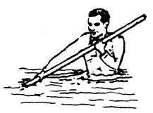
- Nếu có hành lý thì đeo cao trên hai vai cho cân bằng (không khoác một bên vai vì dễ mất thăng bằng) và không bị ướt, nhưng không nên buộc chặt vào người, vì khi cần, có thể nhanh chóng tháo bỏ.
Vượt sông tập thể
Dùng dây:
- Nếu sông không quá rộng và dây đủ dài thì cử một người khoẻ nhất, biết bơi lội, không mang theo hành lý, cầm dây đi nương theo dòng chảy mà qua bên kia bờ, rồi cột chặt đầu dây vào một gốc cây hay gộp đá.
- Sau khi đã cột xong thì những người còn lại bên nầy kéo căng dây rồi cột vào một thân cây hay gộp đá. Như thế là các bạn đã có một chỗ bám an toàn để vượt sông.
- Người cuối cùng, tháo dây, cột vào người để cả toán cùng kéo anh ta sang.
- Nếu dây không đủ dài thì cả nhóm đi theo hàng một, dây buộc vào hông, gậy cầm tay. Người khoẻ mạnh đi đầu hay tiếp ứng phía sau.
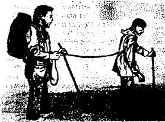
- Di chuyển chầm chậm từng người một, người nầy bước thì những người khác trụ lại, không nên cất bước cùng một lúc, đề phòng nếu có một người bị té ngã thì những người khác không bị lôi theo.
Kết vòng tròn:
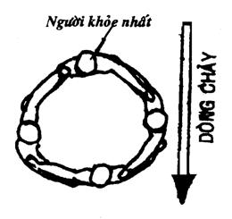
Phương pháp nầy có thể sử dụng ở những nơi nước chảy khá mạnh, và phải có từ 3 người trở lên, nhưng cũng đừng quá đông.
Đứng thành vòng tròn, dang tay bám vào vai nhau. Người khoẻ nhất đứng chịu đầu trên của dòng chảy. Khi di chuyển, nên lê chân sát lòng sông, đừng giở chân lên cao, dòng nước cuốn sẽ làm cho các bạn mất thăng bằng. Nhược điểm của phương pháp nầy là nếu có một người bị trượt té, có thể kéo theo một hai người, làm hỏng kết cấu của đội hình.
Dùng sào dài:
Tìm một cây sào đường kính vừa tay cầm, chiều dài đủ cho mọi người có thể cùng bám vào. Phương pháp nầy để dùng cho những nơi có dòng nước chảy mạnh. Khi di chuyển, người mạnh nhất đứng cuối cây sào, phía dưới dòng chảy. Tất cả mọi người vừa chống lại sức mạnh của dòng chảy vừa đi ngang sang bờ bên kia.
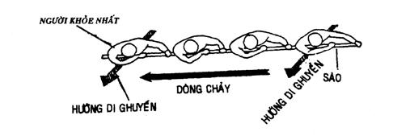
BƠI SANG SÔNG
Nếu các bạn gặp sông sâu, không thể lội bộ qua sông được, nhưng nếu biết bơi, các bạn có thể bơi sang. Tuy nhiên trước khi bơi, các bạn cần lưu ý:
- Những con sông rộng, có lưu lượng nước lớn và chảy mạnh thì rất nguy hiểm, không nên bơi qua.
- Chiều rộng con sông thường rộng lớn hơn chiều rộng do các bạn ước lượng bằng mắt.
- Ngoại trừ các bạn là vận động viên bơi lội hay là ngư dân, bằng không thì khả năng bơi lội của các bạn thường “dỏm” hơn bạn tưởng.
- Nếu thời tiết lạnh, đừng vượt sông vào sáng sớm và khi cơ thể của các bạn chưa được làm nóng.
- Khi nhiệt độ nước xuống quá thấp (dưới 15°C) cũng không nên qua sông, cho dù các bạn là người bơi giỏi cũng sẽ nhanh chóng bị tê cóng.
- Nên cởi quần áo, giầy vớ ra, bỏ vào túi vải hay túi nhựa túm lại rồi cột hay đội lên đầu.
- Khi bơi, các bạn nên nương theo dòng nước để đỡ hao tốn sức lực.
- Nếu có những người đồng hành không biết bơi hay bơi dở, thì người bơi giỏi căng dây qua sông để họ bám vào mà qua sông, nhưng lúc họ qua cũng cần có một người bơi giỏi ở bên cạnh để dìu đỡ và hộ tống, làm cho họ an tâm.
VƯỢT SÔNG BẰNG PHAO
Để vượt sông một cách an toàn, ít tốn sức, các bạn nên tự tạo cho mình những chiếc phao. Tuỳ theo điều kiện và vật dụng cho phép, các bạn có thể làm những chiếc phao đơn giản sau đây:
Phao bằng quần
Dùng quần có vải dầy càng tốt, cột túm cả hai ống lại, cài khuy, nhúng nước cho vải nở ra. Cầm hai bên cạp quần, vung qua đầu từ phía sau tới đập mạnh xuống nước.
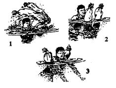
Dùng thân cây:
Tìm những thân cây khô (hay tươi) có độ nổi tốt như tre, chuối, gòn, thông... thả xuống nước rồi các bạn bám một bên để bơi qua.
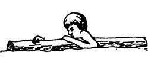
Dùng vải nhựa và cây cỏ:
Nếu có một túi nhựa, một tấm nylon hay vải không thấm nước, thì các bạn lấy lục bình (bèo) ngắt bỏ rể, cỏ khô, lá khô, cành cây (điên điển...), cho vào túi hay cột túm lại, biến thành một phao nổi khá tốt để vượt sông.
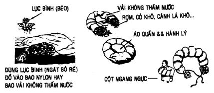
Dùng dây và gỗ:
Chặt hai khúc cây khoảng hơn 1 mét (lựa loại cây có độ nổi tốt). Dùng dây cột lại với nhau, chừa một khoảng cách cỡ 40 – 50 cm. Các bạn đã có một chiếc phao thả nổi rất tốt.
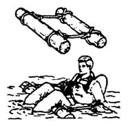
Dùng thùng gỗ nhẹ hay can rỗng
- Nếu có một thùng gỗ nhẹ hay can rỗng, thì các bạn ôm cứng phía trước ngực và bơi bằng hai chân.
- Nếu có từ hai hay nhiều thùng thì các bạn kết lại làm bè hay phao.
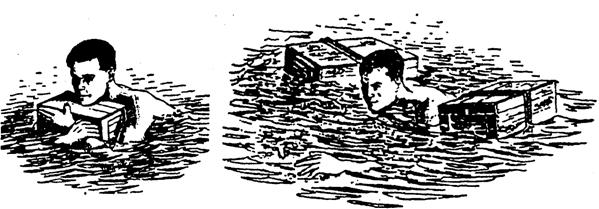
Dùng poncho và hành lý:
Nếu các bạn có một tấm poncho hay vải không thấm nước, các bạn làm một phao vượt sông có thể chở được cả một số lượng hành lý khá nặng. Tiến hành bốn bước theo minh họa dưới đây:
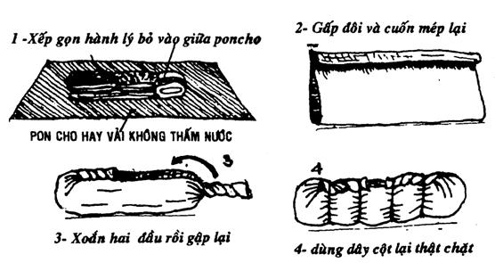
VƯỢT SÔNG BẰNG BÈ
Khi cần chuyên chở nhiều, nhiều lần, nhiều người, nhiều hành lý.... Hoặc các bạn muốn thả trôi theo dòng sông... Nếu có thời gian và dụng cụ thì các bạn nên đóng một chiếc bè chắc chắn. Tuy đây là một phương tiện vận tải thô sơ nhưng khá an toàn và tiện lợi.
Để đóng một chiếc bè, trước tiên các bạn phải chọn một số cây có tính chất nổi thật tốt như tre, bương, gòn, thông... có kích thước tương đương với nhau và cùng một loại. Dùng dây có sẵn hoặc dây rừng, cộng với sự khéo tay và tài linh động tháo vát của các bạn để ghép chúng lại với nhau theo như những cách dưới đây:
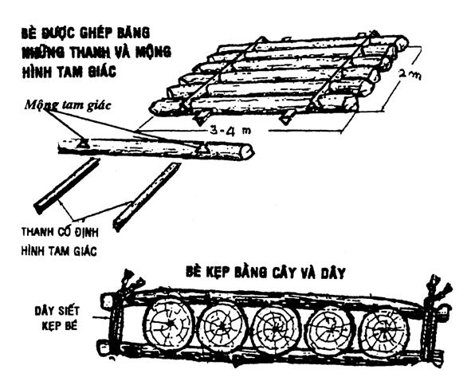
Đưa bè sang sông theo nhịp quả lắc:
Khi các bạn cần qua lại nhiều lần trên một khúc sông thì hãy chọn một khúc ngoặc của con sông có dòng nước chảy mạnh. Cột bè chênh góc vào một gốc cây (như hình minh hoạ). Điều chỉnh dây cột bè cho đến khi nhờ vào sức nước, bè tự động đưa qua đưa lại từ bờ nầy sang bờ kia mà các bạn không cần đến sức chèo chống.
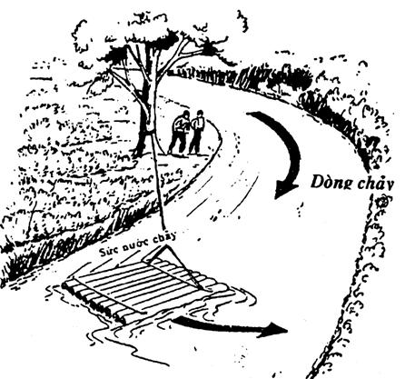
An toàn khi thả bè trôi sông
Nếu các bạn muốn làm một chuyến du hành dài bằng cách thả bè trôi dọc theo dòng sông thì trước tiên, bạn hãy trèo lên cây cao hay một đỉnh đồi, phóng tầm mắt thật xa để nhìn bao quát về phía hạ lưu. Điều nầy rất cần thiết, vì nó sẽ cho chúng ta một cái nhìn tổng thể về cảnh quang, nơi chúng ta sẽ đến.
- Nên làm một cái bánh lái để dễ điều khiển bè. Mang theo một cây sào hay một mái chèo để chèo chống, tránh cho bè va đập, vào các chướng ngại, doi đất, đá ngầm...
- Lắng nghe những âm thanh được truyền đến từ nước, nó có thể cảnh báo cho các bạn biết sự hiện diện của thác, ghềnh hay vật cản... nhờ tiếng nước đổ.
- Nếu thấy có đường chân trời cắt ngang dòng sông, lập tức tấp bè vào bờ ngay, vì có thể đó là một thác nước cao, dễ dàng đánh vỡ hay nhấn chìm bè của các bạn.
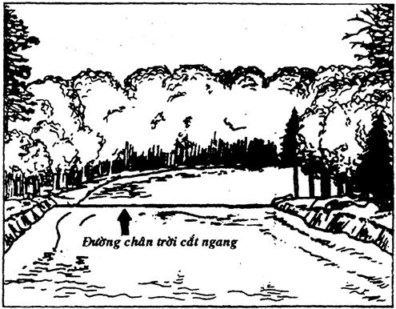
- Khi bè sắp trôi đến những nơi có ngầm, ghềnh, thác nhỏ, vùng nước xoáy hỗn loạn, hãy leo lên bờ rồi giong bè từ từ bằng dây, để nhỡ bè có va vào đá, bị cuốn vào vùng xoáy hay rơi vào ghềnh... các bạn cũng vẫn có thể giữ được an toàn cho bè.
- Hành lý trên bè nên cho vào bao không thấm nước rồi buột chặt vào bè, hoặc cột vào một mảnh gỗ nhẹ, nổi, để nhỡ nếu có rơi khỏi bè, các bạn vẫn có thể tìm thấy dễ dàng.
- Lưu ý những dợn sóng lạ, vì nó có thể ẩn dấu những tảng đá ngầm, dễ dàng làm lật túp bè của các bạn.
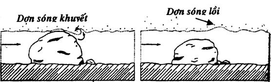
VƯỢT SÔNG, SUỐI BẰNG CẦU
Thật ra thì chỉ khi nào các bạn dự tính ở lại lâu trong khu vực thì mới làm cầu, bằng không thì các bạn tìm những cây cầu tự nhiên do những thân cây ngã đổ ngang suối (trong rừng rậm nhiệt đới rất nhiều) để vượt suối.
Để dựng một chiếc cầu, các bạn cần biết một số yếu tố cần thiết như:
- Chiều rộng con suối
- Độ sâu và lưu lượng của dòng nước
- Thực trạng đáy của dòng suối
- Thực trạng hai bên bờ …
Thường thì các bạn chỉ cần làm một cầu khỉ, đơn giản bằng cách chọn một cây mọc nghiêng ven suối, có độ dài vừa đủ với chiều ngang của con suối, trẩy hết những cành làm vướng víu. Thế là các bạn đã có một chiếc cầu tiện lợi.
Các bạn cũng có thể thiết kế một cầu dây chữ V để vượt qua những hẻm núi, vực sâu… rất tiện lợi. Loại cầu nầy được kết hợp bởi từ 3 – 5 sợi dây to, chắc chắn, căng theo hình chữ V, cố định với nhau bằng những sợi dây nhỏ hơn. Sợi dây lớn nhất nằm ở giữa, thấp hơn các sợi kia, dùng để đi. Các sợi kia căng cao hơn, làm tay vịn và thành cầu.
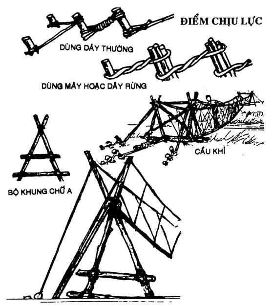